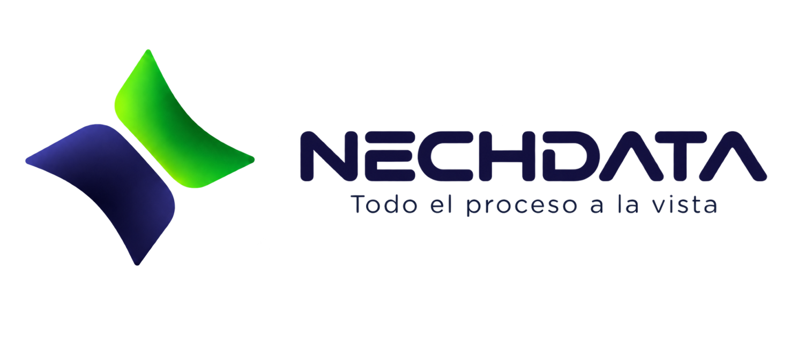
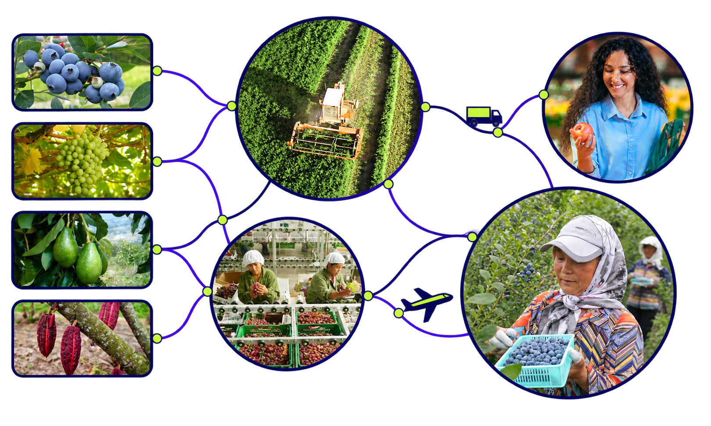

🌱
1. Identifica y registra
La información se relaciona con un lote: productor, procedencia, variedad y registros de las etapas que acompañan a la fruta.

Cada lote tiene un origen, características y un recorrido. NECHDATA reúne esa información y la transforma en una historia digital que pueda consultarse y comprenderse.
Conectamos datos del origen, la calidad, el packing y el destino para acercar la información de la fruta a quienes participan en su recorrido.

La historia de un lote puede estar repartida entre etiquetas, hojas de cálculo, registros de calidad y documentos. Consultarla implica buscar en distintas fuentes y relacionar datos que no siempre se presentan de la misma manera.
Para el consumidor, una cifra o un término técnico también puede decir poco sin una explicación. NECHDATA busca acercar esas piezas: organizar la información y facilitar su comprensión.
Conectar los datos del lote y convertirlos en información útil para cada persona.
La trazabilidad permite relacionar un producto con su origen y con los registros de las etapas por las que ha pasado. En NECHDATA, el lote es el punto de conexión.
La información se relaciona con un lote: productor, procedencia, variedad y registros de las etapas que acompañan a la fruta.
Los datos de origen, calidad, packing y recorrido se reúnen dentro de una misma estructura para facilitar su consulta.
Un enlace asociado a la etiqueta NFC permite acceder a la ficha pública. Allí, el consumidor encuentra información seleccionada y explicaciones sencillas.
Nuestra propuesta contempla información adecuada para cada público. No todos necesitan consultar los mismos detalles.
Proponemos una vista de trabajo para registrar y consultar información técnica y documentos asociados a sus lotes.
Buscamos facilitar la consulta de información sobre los lotes que reciben y su relación con los actores de la cadena.
La ficha pública acerca el origen y las características de la fruta mediante imágenes, datos y explicaciones que ayudan a comprender el producto.
Actualmente desarrollamos el prototipo y la ficha pública. Las vistas especializadas forman parte de las siguientes etapas del proyecto.
Reunir los registros alrededor de un lote facilita encontrar la información asociada al producto.
Relacionar origen, calidad, packing y recorrido permite consultar la historia del lote con contexto.
Las explicaciones acompañan a los términos técnicos para ayudar al consumidor a interpretar los datos.
La información se presenta según las necesidades de quien registra, distribuye o consume la fruta.
NECHDATA es un proyecto académico de trazabilidad digital agroexportadora, inicialmente enfocado en arándanos.
Partimos de una pregunta: ¿cómo podemos organizar la información que acompaña a un lote y hacer que resulte útil para quienes participan en su recorrido?
Combinamos la organización de datos con una comunicación accesible. Construimos el proyecto de forma progresiva, revisando su contenido y funcionamiento a partir de las observaciones recibidas durante su desarrollo.
Cada lote tiene una historia. Nuestro propósito es hacerla visible y comprensible.
Un espacio para acercarnos a la producción de arándanos y comprender los conceptos que aparecen en su ficha digital.
Cómo se expresa el tamaño del fruto y por qué no debe confundirse con una calificación de su sabor o de su calidad general.
PróximamenteQué describe cada indicador y por qué conviene interpretarlos en conjunto al conocer las características de la fruta.
PróximamenteUna explicación de las etapas de acondicionamiento y conservación que acompañan a la fruta antes de llegar a su destino.
Próximamente¿Trabajas en el sector agroexportador, distribuyes fruta o quieres compartir una observación sobre nuestra propuesta?
Nos interesa conocer cómo registras y consultas la información de los lotes, qué dificultades encuentras y qué datos necesitas tener a la mano.
Conoce cómo presentamos el origen, la calidad, el packing y el recorrido de unos arándanos.